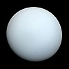

uranus

Definition: Uranus is the seventh planet from the Sun. It is named after Greek sky deity Uranus (Caelus), who in Greek mythology is the father of Cronus (Saturn), a grandfather of Zeus (Jupiter) and great-grandfather of Ares (Mars). Uranus has the third-largest planetary radius and fourth-largest planetary mass in the Solar System. The planet is similar in composition to Neptune, and both have bulk chemical compositions which differ from those of the other two giant planets, Jupiter and Saturn (the gas giants). For this reason, scientists often distinguish Uranus and Neptune as "ice giants".
Source: Wikipedia
Wikipedia Page
Wikidata Page
Occurs in: